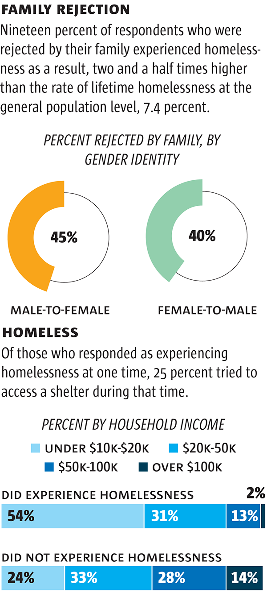
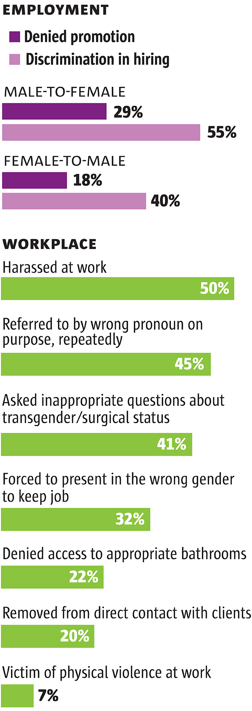

Transgender lives marked by homelessness, violence and work discrimination
One in five transgender people have been homeless at some point in their lives; stability depends on support from family and friends.
VIDEO Members of the transgender community gathered in Boulder Nov. 20 for a Transgender Day of Remembrance march and candlelight vigil. Victims of fatal violence were remembered and speakers discussed challenges facing transgender people.
When Cassidy Karam was 4, she loved playing with her sister’s dollhouse. Her parents realized this about their then-son, though, and got rid of it.
A Sunday school teacher told Cassidy that “girly” boys go to hell. And at 19, when Cassidy’s parents figured out she was putting on skirts and makeup before she went out at night, they gave her a deadline to find a new place to live.
It was the beginning of three years on the road, a homeless journey across the interior United States fueled by drugs and the kindness, and ulterior motives, of strangers.
One in five transgender people have been homeless at some point in their lives, according to the National Center for Transgender Equality. Among the 1.6 million homeless youth in this country, between 20 and 40 percent are gay or transgender.
Subscribe for updates
Add your e-mail to receive an alert when we publish the next stories in this series.
The majority of people who are homeless have lost the support of family and friends. What’s different among the homeless transgender population is how quickly they lost it, said Terrell Curtis, director of the Dolores Project women’s shelter in Denver. “For transgender people, it is so immediate and sometimes almost out of the blue,” she said.
Cassidy left home because her parents didn’t understand her, and neither did friends or coworkers at the pizza place back in Mansfield, Ohio. “I didn’t know how to interact with people. Girls thought I was creepy. Boys thought I was gay,” she said. “Kids my age didn’t want anything to do with me.”
Cassidy, 24, landed at Denver’s Urban Peak for homeless youth this fall after the longest of road trips in which she bummed rides from new friends and slept on apartment couches and in fancy hotel suites from Memphis to Chicago to Las Vegas. She did things she’s not proud of in order to stay someplace warm, or even for the smallest of rewards: a Taco Bell ice cream sandwich was a low point.
Cassidy has golden hair and a feminine face, and she “was blessed,” she says, with a high-pitched voice that doesn’t give away that she transitioned to female a few years ago. People don’t know she is transgender until she tells them, and when she was homeless, she didn’t always tell people she had just met. Men who bought her dinner or gave her motorcycle rides before they found out typically flew into a rage and threw her out, leaving her back on the street.
More than once she was afraid for her life. And with good reason: 53 transgender people have been murdered since 2013, including eight killed by an intimate partner, according to a Human Rights Campaign report.
Nearly 90 percent of the victims were people of color, and almost all were transgender women. So far this year, 21 transgender people in this country were victims of fatal violence, a record for such killings.
In Colorado in 2008, 18-year-old Angie Zapata, a transgender woman, was beaten to death with a fire extinguisher in her Greeley apartment by a man she had been dating.
“Being comfortable all the time, feeling safe all the time is a huge privilege, and a lot of people don’t realize what a privilege it is until it’s pointed out how unsafe other people feel all the time,” said Sara Connell, transgender program liaison for Out Boulder.
Joe Amon, The Denver PostCharles and Danielle Michalsky talk about their time together and their marriage while having coffee at The Delores Project, a shelter for homeless women.
More trans residents
Among the 50 homeless women who sleep in bunk beds and cots at the Dolores Project, up to five at any given time are transgender women. Since 2012, the number of shelter residents indentifying as trans has grown from 1 or 2 percent to more than 10 percent.
In Denver, the shelter is known as a safe place for those who have transitioned to living as women, even if they have not had surgery. It doesn’t matter if the name they use matches their ID, or if they are early in transition and still appear masculine, they are allowed to stay at the women’s shelter.
Downward Spiral
A survey of transgender people published in 2011 found a link between family rejection and homelessness.
Michelle Doe, The Denver PostSource: Injustice at Every Turn: National Transgender Discrimination Survey
Note: Totals do not equal 100 percent due to rounding.
Note: The study includes 6,450 respondents and transgender and gender non-conforming participants
Residents who refuse to use female pronouns for a transgender woman sharing their dorm or make derogatory comments are kicked out, same as residents who use racial slurs. “We aren’t going to tolerate bullying,” director Curtis said. “Our guests will come to us and say, ‘There is a guy in here!’ We say, ‘Everybody who is here is supposed to be here and everybody who is here is safe to be here.’”
Danielle Michalsky, a 58-year-old transgender woman who lives at the Dolores shelter, paid $8,000 for gender reassignment surgery in Thailand about a decade ago. She’s been estranged from her family ever since.
Danielle and her husband, Charles, have been bunking at the Denver shelter since last spring after moving out of a Texas mobile-home park where they were ridiculed by other residents. People often treat Danielle as if she were a “toy,” her husband said. Charles, who identifies as male and takes testosterone, was allowed to stay at the women’s shelter after explaining to staff that he was born intersex — with genitalia not clearly male or female.
“Some of the women here are prejudging me before they know me,” said Charles, 33. “I feel awkward being here as it is, and sometimes I see women giving me a dirty look. But it’s a roof over our head, it’s food in our belly, it’s another day until we find a permanent house.”
Among transgender people who are homeless, more than half reported in a national survey that they were harassed by staff or residents in a shelter. About 30 percent said they were turned away because of their gender identity.
Earlier this year, the federal government said homeless shelters cannot ask transgender people questions about their bodies or medical histories and instead must place them by their self-identified gender. The guidance from HUD said shelters cannot send transgender people away because of the gender on their ID or because other people staying in the shelter are uncomfortable.
Advocacy groups pushed for the additional guidance after a 2012 federal ban on discrimination because of sexual orientation or gender identity in HUD-funded shelters.
Joe Amon, The Denver PostAmber Rose Timmons rents a room from a couple in downtown Denver. A former auto mechanic, Amber lost her relationship and her job, and has struggled to find stable housing, since transitioning to live as a woman two years ago at age 40.
Still ‘a lot of hurt’
In the 1990s, when clients visited the Gender Identity Center in Denver to ask director Karen Scarpella for advice on how to transition, she would sit them down before asking, “Are you ready to lose everything?”
Your spouse, your job, your home. “And they would look down and say, ‘Yes, I am. Let’s go.’”
Job troubles
In the 2011 survey, 78 percent of respondents said they had experienced some form of workplace discrimination.
Michelle Doe, The Denver PostSource: Injustice at Every Turn: National Transgender Discrimination Survey
Note: The study includes 6,450 respondents and transgender and gender non-conforming participants
Scarpella, whose center sees about 100 clients for counseling per week, said “there is no comparison” between the way society accepts transgender people now compared to 20 years ago. “Now, there is no reason for you to lose your marriage, or your job, or for your kids never to talk to you again,” she said. But “we still have a lot of hurt walking through our door.”
The older people are, the harder it is for them to transition because their peers are often not as accepting, she said. The center, which holds support groups every night, has evolved over the years to teach people to announce their transition as good news. “If you lower your head and apologize and say, ‘I have something terrible to tell you,’ people aren’t going to take it well,” Scarpella said. “Instead say, ‘I have good news. I’m going to transition.’”
Colorado has anti-discrimination laws intended to protect transgender people in housing and employment. Still, keeping or finding a job is among the biggest challenges facing trans people who visit the Gender Identity Center.
“You can’t fire someone for being transgender, but you can fire someone for being five minutes late,” Scarpella said, referring to an excuse an employer might use to discriminate. “You can’t legislate morality.”
One client nearly lost her job after her transition when a supervisor began fabricating her sales sheets to make it appear she wasn’t working as hard. The worker had kept the original reports, however, and the supervisor was fired instead.
Joe Amon, The Denver PostAmber hugs Brittany Bollenbach, a co-host for poetry night at Blush & Blu, as the evening’s final poet performs.
A survey of 6,450 transgender people found they were twice as likely as the general population to be unemployed, and for transgender people of color, that jumped to four times as likely. Almost half of people surveyed for the “Injustice at Every Turn” report said they had been fired or not gotten a job because they are transgender.
The problems are compounded for people of color who already face societal obstacles based on race, said Nicole Garcia, a Longmont-based counselor and transgender Latina who works with people in gender transition.
“Add to that the discrimination against people who do not fit neatly into the binary gender system,” she said, “and you end up with a group of people who are not allowed to obtain gainful employment which pushes many of us to the margins of society.”
‘Couldn’t push it down’
Amber Rose Timmons, an auto mechanic, didn’t expect to lose everything when she transitioned to live as a woman two years ago at age 40. Had she known, though, she would have done it anyway.
“I live day by day, but I have no regret. I love who I’ve become. I love being me, for once,” she said. “It’s waking up each morning and putting one foot in front of the other. I am who I am. If the public doesn’t like me, so what?”
The way the world has treated Amber in the last two years isn’t much different from the way her stepmother reacted back in 1982 when she caught Amber, then 9, trying on her skirt and blouse. It was during one of the worst blizzards ever in Denver, and Amber’s stepmother tossed her out the front door and locked it. “If you want to dress like a girl, the whole neighborhood is going to know,” Amber recalls her saying.
After that, she buried her feelings as deep as she could, then grew up and tried “to be a man.” She became an auto mechanic, married a woman, had three children and later divorced. Each time the feelings rose to the surface, Amber would dress up in private until they subsided. But in 2013, “the urge returned and I couldn’t push it down,” she said. “It wouldn’t go away, no matter how hard I tried this time.”
Joe Amon, The Denver PostAmber, nervous during her first public poetry read, looks for help to title her poem. The poem began: A secret hidden so deep within yourself for fear of it being found out / A life on the run, always looking over your shoulder / An enormous black cloud hovering right over your head / Threatening to strike you down at any second.
That’s when Amber walked into the Gender Identity Center to ask for help. When she decided to order female hormones online, she had them shipped to the garage where she worked instead of the home she shared with her girlfriend of two years.
Amber wrote and rewrote the same two paragraphs on her laptop “at least 50 times” explaining that she had always felt she was a woman. Within a week of showing it to her girlfriend, she was kicked out of the house. The woman said Amber was “an abomination against God” and she didn’t want her around her children. Her words left no room for misinterpretation: “We don’t want you here. We don’t want anything to do with this.”
Amber’s job as lead mechanic of the garage lasted only slightly longer.
She told her coworkers she was transitioning, then began showing up for work in male clothes but with manicured nails and blonde highlights. Soon her figure began to change because of the hormones.
Three months later, Amber was laid off. Her boss said business was slow, which was true, but Amber believes she was the one let go because coworkers were uncomfortable around her.
It took a year — and at least 100 applications — to find steady work. She tried for a while to work as a traveling mechanic, only to have some clients see her and change their minds. Each time she applied for a job, managers would do a double-take trying to reconcile her appearance with the male name she had not yet changed. “You could see it in their face the second that they realized,” she said.
Amber finally found a job six months ago as a night clerk in a gas station, minimum wage and an hour’s drive to Roxborough from the Capitol Hill room she is renting.
Share your story
Do you have a story to share about your experiences as a transgender person? Let us know:
Jennifer Brown:
Since her transition, Amber has lived in five places. She’s renting a bedroom now from a couple. “I’m one step above homeless,” she said. “All my friends, none of them stuck around.”
Her life, she says, is a gray box, a lonely place that contains only work at the gas station and nights off at bars along Colfax Avenue hoping she will meet someone who does not care what she is. She has shoulder-length highlighted hair, frosty eye shadow and silver hoop earrings. The tattoo on her left forearm says “My story doesn’t end here.”
She doesn’t know where it ends. But it’s getting easier. “I don’t know if each day I love myself a little more,” she said, “or if I care a little less about the outside world.”
Joe Amon, The Denver PostAmber tells her story and listens to others outside Bush & Blu. “I’m one step above homeless,” she says about her situation. “All my friends, none of them stuck around.”